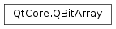

QBitArray¶
Synopsis¶
Functions¶
- def
__and__(, arg__2) - def
__and__(, arg__2) - def
__eq__(other) - def
__getitem__() - def
__iand__(arg__1) - def
__ior__(arg__1) - def
__ixor__(arg__1) - def
__len__() - def
__ne__(other) - def
__or__(, arg__2) - def
__setitem__() - def
__xor__(, arg__2) - def
at(i) - def
bits() - def
clear() - def
clearBit(i) - def
count() - def
count(on) - def
fill(val, first, last) - def
fill(val[, size=-1]) - def
isEmpty() - def
isNull() - def
operator[](i) - def
operator[](i) - def
operator~() - def
resize(size) - def
setBit(i) - def
setBit(i, val) - def
size() - def
swap(other) - def
testBit(i) - def
toggleBit(i) - def
truncate(pos)
Detailed Description¶
The
PySide2.QtCore.QBitArrayclass provides an array of bits.A
PySide2.QtCore.QBitArrayis an array that gives access to individual bits and provides operators (AND,OR,XOR, andNOT) that work on entire arrays of bits. It uses implicit sharing (copy-on-write) to reduce memory usage and to avoid the needless copying of data.The following code constructs a
PySide2.QtCore.QBitArraycontaining 200 bits initialized to false (0):ba = QBitArray(200)To initialize the bits to true, either pass
trueas second argument to the constructor, or callPySide2.QtCore.QBitArray.fill()later on.
PySide2.QtCore.QBitArrayuses 0-based indexes, just like C++ arrays. To access the bit at a particular index position, you can use operator[](). On non-const bit arrays, operator[]() returns a reference to a bit that can be used on the left side of an assignment. For example:ba = QBitArray() ba.resize(3) ba[0] = True ba[1] = False ba[2] = TrueFor technical reasons, it is more efficient to use
PySide2.QtCore.QBitArray.testBit()andPySide2.QtCore.QBitArray.setBit()to access bits in the array than operator[](). For example:ba = QBitArray(3) ba.setBit(0, True) ba.setBit(1, False) ba.setBit(2, True)
PySide2.QtCore.QBitArraysupports&(AND),|(OR),^(XOR),~(NOT), as well as&=,|=, and^=. These operators work in the same way as the built-in C++ bitwise operators of the same name. For example:x = QBitArray(5) x.setBit(3, True) # x: [ 0, 0, 0, 1, 0 ] y = QBitArray(5) y.setBit(4, True) # y: [ 0, 0, 0, 0, 1 ] x |= y # x: [ 0, 0, 0, 1, 1 ]For historical reasons,
PySide2.QtCore.QBitArraydistinguishes between a null bit array and an empty bit array. A null bit array is a bit array that is initialized usingPySide2.QtCore.QBitArray‘s default constructor. An empty bit array is any bit array with size 0. A null bit array is always empty, but an empty bit array isn’t necessarily null:QBitArray().isNull() # returns True QBitArray().isEmpty() # returns True QBitArray(0).isNull() # returns False QBitArray(0).isEmpty() # returns True QBitArray(3).isNull() # returns False QBitArray(3).isEmpty() # returns FalseAll functions except
PySide2.QtCore.QBitArray.isNull()treat null bit arrays the same as empty bit arrays; for example,PySide2.QtCore.QBitArray.QBitArray()compares equal toPySide2.QtCore.QBitArray(0). We recommend that you always usePySide2.QtCore.QBitArray.isEmpty()and avoidPySide2.QtCore.QBitArray.isNull().See also
PySide2.QtCore.QByteArrayQVector
-
class
PySide2.QtCore.QBitArray¶ -
class
PySide2.QtCore.QBitArray(other) -
class
PySide2.QtCore.QBitArray(size[, val=false]) Parameters: - size –
PySide2.QtCore.int - val –
PySide2.QtCore.bool - other –
PySide2.QtCore.QBitArray
Constructs an empty bit array.
See also
Constructs a copy of
other.This operation takes constant time , because
PySide2.QtCore.QBitArrayis implicitly shared . This makes returning aPySide2.QtCore.QBitArrayfrom a function very fast. If a shared instance is modified, it will be copied (copy-on-write), and that takes linear time .See also
PySide2.QtCore.QBitArray.operator=()Constructs a bit array containing
sizebits. The bits are initialized withvalue, which defaults to false (0).- size –
-
PySide2.QtCore.QBitArray.__getitem__()¶
-
PySide2.QtCore.QBitArray.__len__()¶
-
PySide2.QtCore.QBitArray.__setitem__()¶
-
PySide2.QtCore.QBitArray.at(i)¶ Parameters: i – PySide2.QtCore.intReturn type: PySide2.QtCore.boolReturns the value of the bit at index position
i.imust be a valid index position in the bit array (i.e., 0 <=i<PySide2.QtCore.QBitArray.size()).See also
PySide2.QtCore.QBitArray.operator[]()
-
PySide2.QtCore.QBitArray.bits()¶ Return type: str Returns a pointer to a dense bit array for this
PySide2.QtCore.QBitArray. Bits are counted upwards from the least significant bit in each byte. The the number of bits relevant in the last byte is given bysize() % 8.See also
fromBits()PySide2.QtCore.QBitArray.size()
-
PySide2.QtCore.QBitArray.clear()¶ Clears the contents of the bit array and makes it empty.
-
PySide2.QtCore.QBitArray.clearBit(i)¶ Parameters: i – PySide2.QtCore.intSets the bit at index position
ito 0.imust be a valid index position in the bit array (i.e., 0 <=i<PySide2.QtCore.QBitArray.size()).
-
PySide2.QtCore.QBitArray.count()¶ Return type: PySide2.QtCore.intSame as
PySide2.QtCore.QBitArray.size().
-
PySide2.QtCore.QBitArray.count(on) Parameters: on – PySide2.QtCore.boolReturn type: PySide2.QtCore.intIf
onis true, this function returns the number of 1-bits stored in the bit array; otherwise the number of 0-bits is returned.
-
PySide2.QtCore.QBitArray.fill(val[, size=-1])¶ Parameters: - val –
PySide2.QtCore.bool - size –
PySide2.QtCore.int
Return type: PySide2.QtCore.boolSets every bit in the bit array to
value, returning true if successful; otherwise returnsfalse. Ifsizeis different from -1 (the default), the bit array is resized tosizebeforehand.Example:
ba = QBitArray(8) ba.fill(True) # ba: [ 1, 1, 1, 1, 1, 1, 1, 1 ] ba.fill(False, 2) # ba: [ 0, 0 ]
See also
- val –
-
PySide2.QtCore.QBitArray.fill(val, first, last) Parameters: - val –
PySide2.QtCore.bool - first –
PySide2.QtCore.int - last –
PySide2.QtCore.int
This is an overloaded function.
Sets bits at index positions
beginup to (but not including)endtovalue.beginmust be a valid index position in the bit array (0 <=begin<PySide2.QtCore.QBitArray.size()).endmust be either a valid index position or equal toPySide2.QtCore.QBitArray.size(), in which case the fill operation runs until the end of the array (0 <=end<=PySide2.QtCore.QBitArray.size()).Example:
QBitArray ba(4); ba.fill(true, 1, 2); // ba: [ 0, 1, 0, 0 ] ba.fill(true, 1, 3); // ba: [ 0, 1, 1, 0 ] ba.fill(true, 1, 4); // ba: [ 0, 1, 1, 1 ]
- val –
-
PySide2.QtCore.QBitArray.isEmpty()¶ Return type: PySide2.QtCore.boolReturns
trueif this bit array has size 0; otherwise returns false.See also
-
PySide2.QtCore.QBitArray.isNull()¶ Return type: PySide2.QtCore.boolReturns
trueif this bit array is null; otherwise returnsfalse.Example:
QBitArray().isNull() # returns True QBitArray(0).isNull() # returns False QBitArray(3).isNull() # returns False
Qt makes a distinction between null bit arrays and empty bit arrays for historical reasons. For most applications, what matters is whether or not a bit array contains any data, and this can be determined using
PySide2.QtCore.QBitArray.isEmpty().See also
-
PySide2.QtCore.QBitArray.__ne__(other)¶ Parameters: other – PySide2.QtCore.QBitArrayReturn type: PySide2.QtCore.boolReturns
trueifotheris not equal to this bit array; otherwise returnsfalse.See also
PySide2.QtCore.QBitArray.operator==()
-
PySide2.QtCore.QBitArray.__and__(arg__2)¶ Parameters: arg__2 – PySide2.QtCore.QBitArrayReturn type: PySide2.QtCore.QBitArray
-
PySide2.QtCore.QBitArray.__and__(arg__2) Parameters: arg__2 – PySide2.QtCore.QBitArrayReturn type: PySide2.QtCore.QBitArray
-
PySide2.QtCore.QBitArray.__iand__(arg__1)¶ Parameters: arg__1 – PySide2.QtCore.QBitArrayReturn type: PySide2.QtCore.QBitArrayPerforms the AND operation between all bits in this bit array and
other. Assigns the result to this bit array, and returns a reference to it.The result has the length of the longest of the two bit arrays, with any missing bits (if one array is shorter than the other) taken to be 0.
Example:
a = QBitArray(3) b = QBitArray(2) a[0] = 1 a[1] = 0 a[2] = 1 # a: [ 1, 0, 1 ] b[0] = 1 b[1] = 0 # b: [ 1, 1 ] a &= b # a: [ 1, 0, 0 ]
See also
PySide2.QtCore.QBitArray.operator&()PySide2.QtCore.QBitArray.operator|=()PySide2.QtCore.QBitArray.operator^=()PySide2.QtCore.QBitArray.operator~()
-
PySide2.QtCore.QBitArray.__eq__(other)¶ Parameters: other – PySide2.QtCore.QBitArrayReturn type: PySide2.QtCore.boolReturns
trueifotheris equal to this bit array; otherwise returnsfalse.See also
PySide2.QtCore.QBitArray.operator!=()
-
PySide2.QtCore.QBitArray.operator[](i) Parameters: i – PySide2.QtCore.uintReturn type: PySide2.QtCore.boolThis is an overloaded function.
-
PySide2.QtCore.QBitArray.operator[](i) Parameters: i – PySide2.QtCore.intReturn type: PySide2.QtCore.boolThis is an overloaded function.
-
PySide2.QtCore.QBitArray.__xor__(arg__2)¶ Parameters: arg__2 – PySide2.QtCore.QBitArrayReturn type: PySide2.QtCore.QBitArray
-
PySide2.QtCore.QBitArray.__ixor__(arg__1)¶ Parameters: arg__1 – PySide2.QtCore.QBitArrayReturn type: PySide2.QtCore.QBitArrayPerforms the XOR operation between all bits in this bit array and
other. Assigns the result to this bit array, and returns a reference to it.The result has the length of the longest of the two bit arrays, with any missing bits (if one array is shorter than the other) taken to be 0.
Example:
a = QBitArray(3) b = QBitArray(2) a[0] = 1 a[1] = 0 a[2] = 1 # a: [ 1, 0, 1 ] b[0] = 1 b[1] = 0 # b: [ 1, 1 ] a ^= b # a: [ 0, 1, 1 ]
See also
PySide2.QtCore.QBitArray.operator^()PySide2.QtCore.QBitArray.operator&=()PySide2.QtCore.QBitArray.operator|=()PySide2.QtCore.QBitArray.operator~()
-
PySide2.QtCore.QBitArray.__or__(arg__2)¶ Parameters: arg__2 – PySide2.QtCore.QBitArrayReturn type: PySide2.QtCore.QBitArray
-
PySide2.QtCore.QBitArray.__ior__(arg__1)¶ Parameters: arg__1 – PySide2.QtCore.QBitArrayReturn type: PySide2.QtCore.QBitArrayPerforms the OR operation between all bits in this bit array and
other. Assigns the result to this bit array, and returns a reference to it.The result has the length of the longest of the two bit arrays, with any missing bits (if one array is shorter than the other) taken to be 0.
Example:
a = QBitArray(3) b = QBitArray(2) a[0] = 1 a[1] = 0 a[2] = 1 # a: [ 1, 0, 1 ] b[0] = 1 b[1] = 0 # b: [ 1, 1 ] a |= b # a: [ 1, 1, 1 ]
See also
PySide2.QtCore.QBitArray.operator|()PySide2.QtCore.QBitArray.operator&=()PySide2.QtCore.QBitArray.operator^=()PySide2.QtCore.QBitArray.operator~()
-
PySide2.QtCore.QBitArray.operator~() Return type: PySide2.QtCore.QBitArrayReturns a bit array that contains the inverted bits of this bit array.
Example:
a = QBitArray(3) b = QBitArray() a[0] = 1 a[1] = 0 a[2] = 1 # a: [ 1, 0, 1 ] b = ~a # b: [ 0, 1, 0 ]
See also
PySide2.QtCore.QBitArray.operator&()PySide2.QtCore.QBitArray.operator|()PySide2.QtCore.QBitArray.operator^()
-
PySide2.QtCore.QBitArray.resize(size)¶ Parameters: size – PySide2.QtCore.intResizes the bit array to
sizebits.If
sizeis greater than the current size, the bit array is extended to make itsizebits with the extra bits added to the end. The new bits are initialized to false (0).If
sizeis less than the current size, bits are removed from the end.See also
-
PySide2.QtCore.QBitArray.setBit(i)¶ Parameters: i – PySide2.QtCore.intSets the bit at index position
ito 1.imust be a valid index position in the bit array (i.e., 0 <=i<PySide2.QtCore.QBitArray.size()).
-
PySide2.QtCore.QBitArray.setBit(i, val) Parameters: - i –
PySide2.QtCore.int - val –
PySide2.QtCore.bool
This is an overloaded function.
Sets the bit at index position
itovalue.- i –
-
PySide2.QtCore.QBitArray.size()¶ Return type: PySide2.QtCore.intReturns the number of bits stored in the bit array.
See also
-
PySide2.QtCore.QBitArray.swap(other)¶ Parameters: other – PySide2.QtCore.QBitArraySwaps bit array
otherwith this bit array. This operation is very fast and never fails.
-
PySide2.QtCore.QBitArray.testBit(i)¶ Parameters: i – PySide2.QtCore.intReturn type: PySide2.QtCore.boolReturns
trueif the bit at index positioniis 1; otherwise returnsfalse.imust be a valid index position in the bit array (i.e., 0 <=i<PySide2.QtCore.QBitArray.size()).
-
PySide2.QtCore.QBitArray.toggleBit(i)¶ Parameters: i – PySide2.QtCore.intReturn type: PySide2.QtCore.boolInverts the value of the bit at index position
i, returning the previous value of that bit as either true (if it was set) or false (if it was unset).If the previous value was 0, the new value will be 1. If the previous value was 1, the new value will be 0.
imust be a valid index position in the bit array (i.e., 0 <=i<PySide2.QtCore.QBitArray.size()).
-
PySide2.QtCore.QBitArray.truncate(pos)¶ Parameters: pos – PySide2.QtCore.intTruncates the bit array at index position
pos.If
posis beyond the end of the array, nothing happens.See also
© 2018 The Qt Company Ltd. Documentation contributions included herein are the copyrights of their respective owners. The documentation provided herein is licensed under the terms of the GNU Free Documentation License version 1.3 as published by the Free Software Foundation. Qt and respective logos are trademarks of The Qt Company Ltd. in Finland and/or other countries worldwide. All other trademarks are property of their respective owners.